USS Pegasus
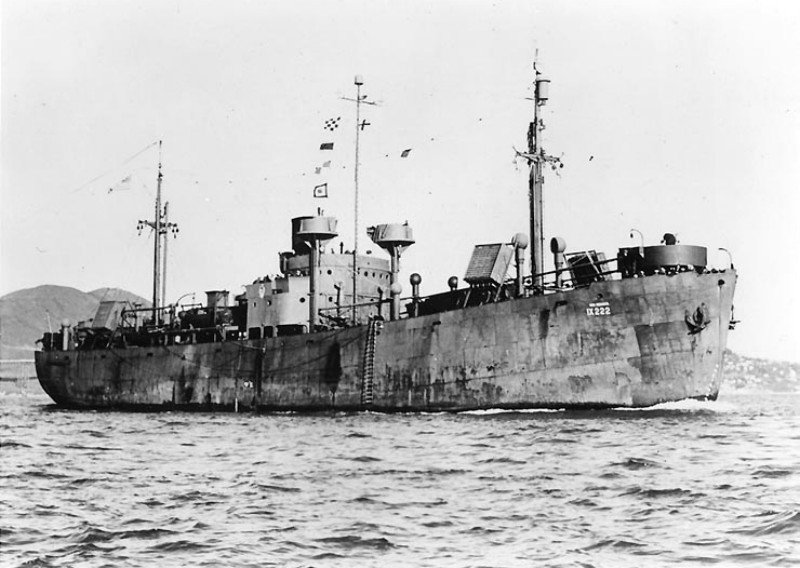
USS Pegasus (AK-48 / IX-222)
Pegasus began life as the Danish freighter Rita Maersk and was acquired by the U.S. Navy in 1941. During the war she served as a cargo ship and later as a miscellaneous unclassified dry-cargo station ship.
By 1945-1946 Pegasus was operating in the Western Pacific, including Leyte Gulf in the Philippines. The diary follows Poppie's homeward trip as the ship returned to San Francisco.
Notes & Details
USS Pegasus (IX-222) entering San Francisco Bay, circa March 4, 1946. Source notes identify a long homeward-bound pennant flying from the mainmast peak; in this reproduction it is very faint, trailing leftward from the mast.
Specifications
- Built as
- Rita Maersk, Danish freighter, 1939
- Acquired
- September 18, 1941
- Commissioned
- December 3, 1941
- Reclassified
- IX-222 on May 15, 1945
- Decommissioned
- April 19, 1946, San Francisco
- Length
- About 299.9 ft overall
- Beam
- 43.5 ft
- Speed
- 12 knots
- Crew
- 103 listed by Shipscribe for 1944; some summaries list 156
- Armament
- Varied; included 4-inch, 3-inch, .50 cal, and 20 mm guns
- Pacific service
- Leyte Gulf from July 18, 1945 into 1946
- Returned home
- Arrived San Francisco March 4, 1946
Pignataro Brothers
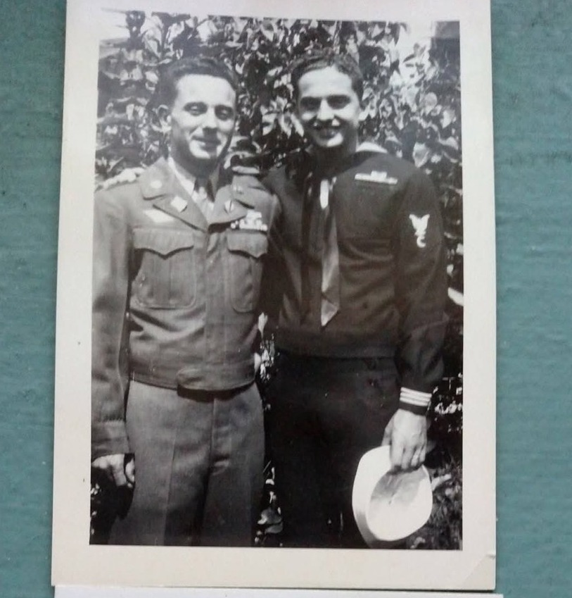
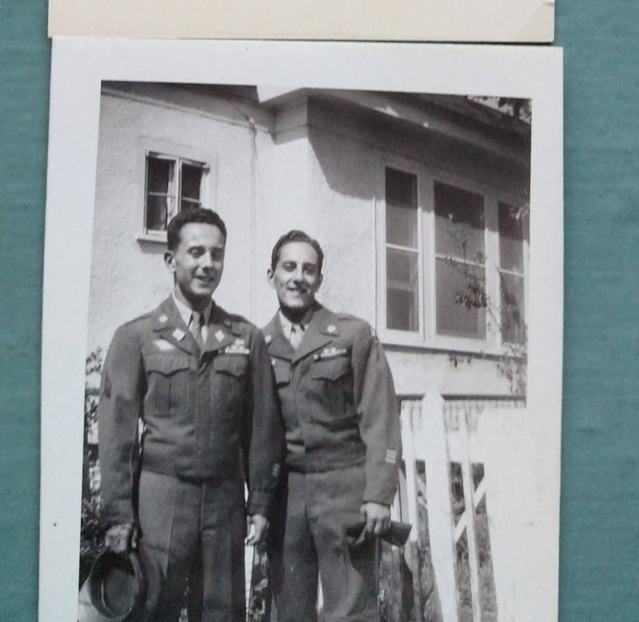
Page 01
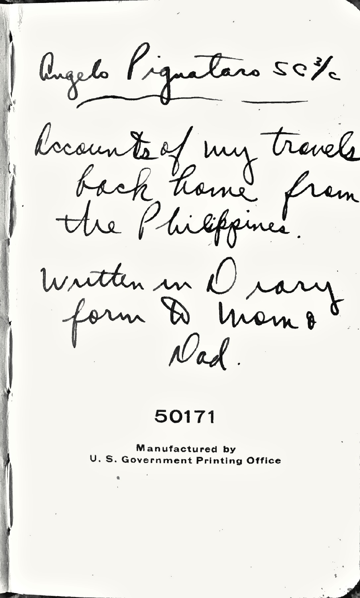
Angelo Pignataro SC 3/c*
Account of my travels back home from the Philippines.
Written in diary form to Mom & Dad.
Notes & Details
Rating note
SC 3/C in a Navy context most likely means Ship's Cook, Third Class. SC = Ship's Cook; 3/C or 3c = Third Class. Full style: Ship's Cook Third Class. Roughly equivalent in rank level to Petty Officer Third Class, depending on the era. Modern closest successor: Culinary Specialist Third Class, CS3.
Page 02
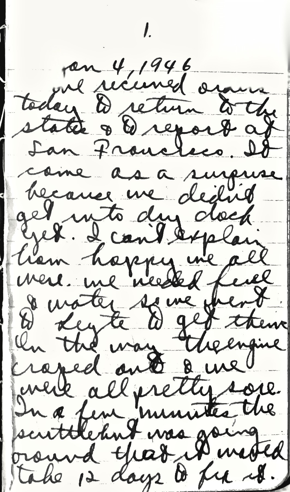
Jan. 4, 1946
We received orders today to return to the states & to report at San Francisco. It came as a surprise because we didn't get into dry dock yet. I can't explain how happy we all were. We needed fuel & water so we went to Leyte to get them. On the way the engine craped out & we were all pretty sore. In a few minutes the scuttlebutt was going around that it would take 12 days to fix it. There goes our chance of going home. Because as soon as the base command hears of it they'll tell us to stay here. But our captain didn't radio in & they went to work to fix it. Its now 10 P.M. & I guess I'll turn in.
Notes & Details
Leyte and liberation
Leyte is an island in the eastern Philippines. In this WWII context, liberation means the Allied campaign to free the Philippines from Japanese occupation; U.S. forces landed on Leyte on Oct. 20, 1944. The map below shows Leyte, Samar, Leyte Gulf, San Pedro Bay, and the surrounding islands with their actual coastlines.
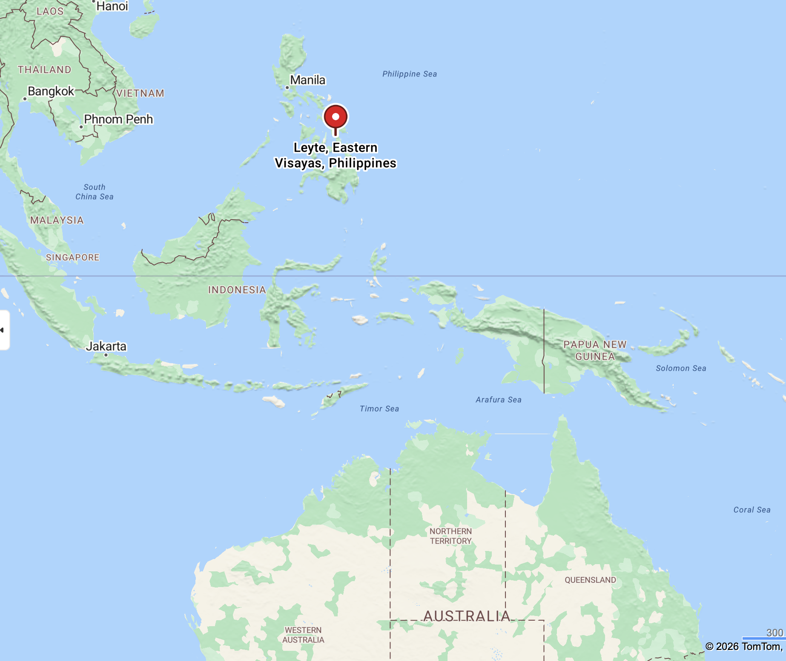
Page 03
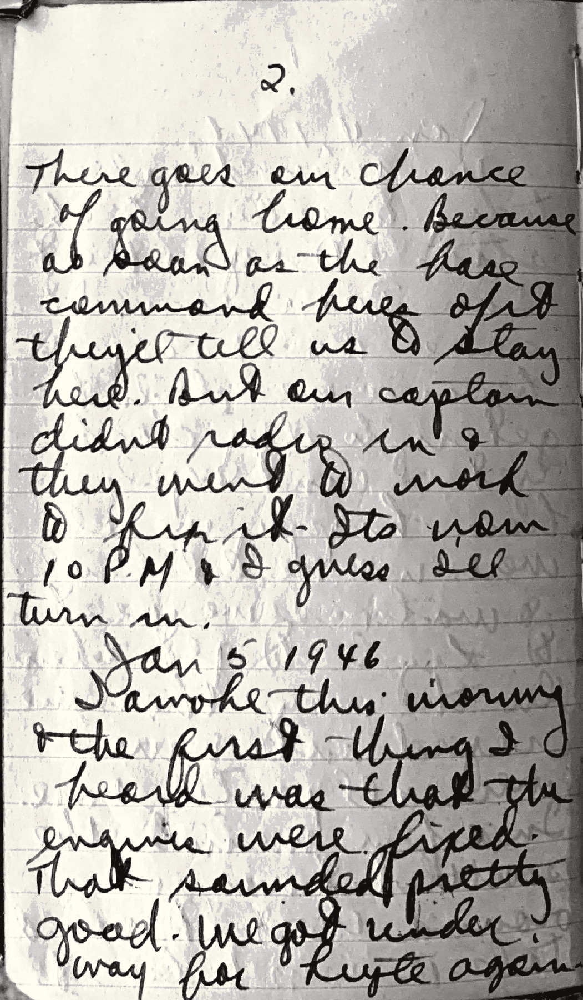
Jan. 5, 1946
Awoke this morning & the first thing I heard was that the engines were fixed. That sounded pretty good. We got under way for Leyte again. We arrived at night & got filled up in a few hours. We'll have to leave tomorrow cause of some details. There weren't any movies tonight & the night was lonely & solemn. But I'll take it now that we're going stateside, I need to turn in.
Page 04
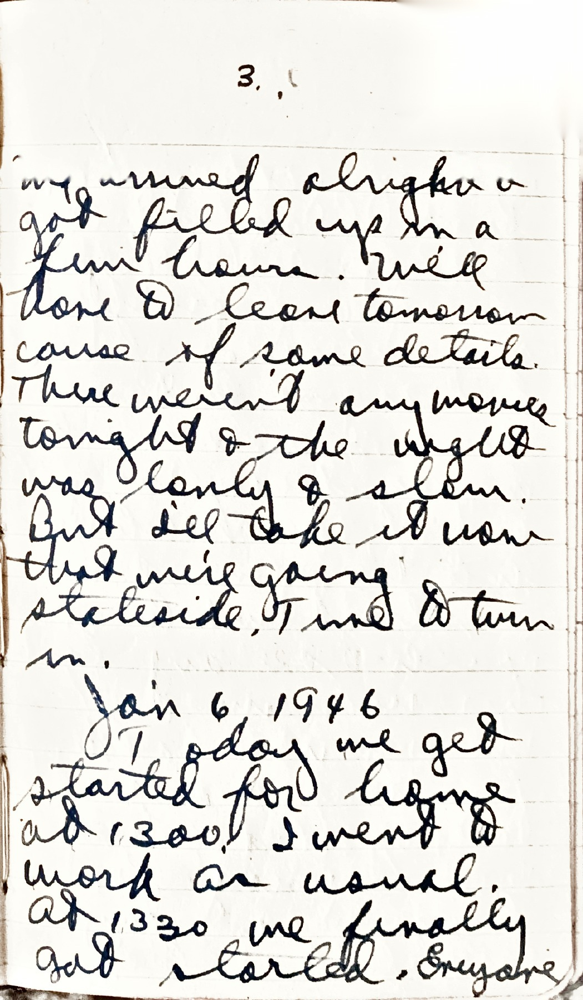
Jan. 6, 1946
Today we get started for home at 1300. I went to work as usual. At 1330 we finally got started. Everyone was up getting their last look at the Philippines. (I hope) We're going pretty slow because of our bad engine. But as long as we're started we don't care. We got out of the harbor & into the open sea. In a short while we couldn't see any land. This was noon. Most of the men were talking of getting sea sick, & they did. They were heaving for hours. I can say truthfully I felt
Page 05
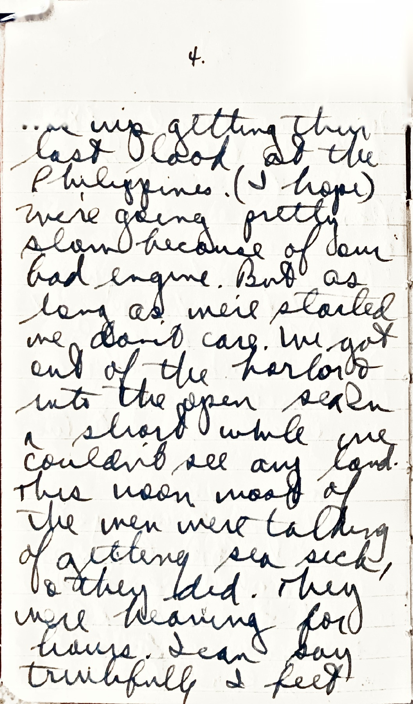
Page 06
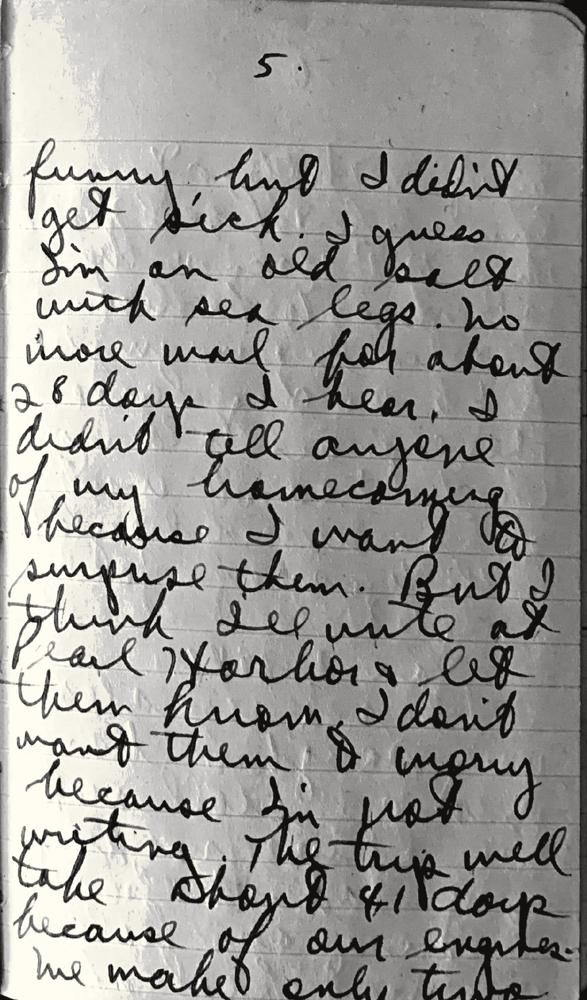
funny, but I didn't get sick. I guess I'm an old salt with sea legs. No more mail for about 28 days I hear. I didn't tell anyone of my homecoming because I want to surprise them. But I think I'll write at Pearl Harbor & let them know. I don't want them to worry because I'm not writing. This trip will take about 41 days because of our engine. We make only five stops. Thats at Eniwetok & Pearl Harbor then to Frisco & the ship is to be decommissioned & we might get a 30 day leave. The captain told us that. I can't wait. I'm so excited & glad till tomorrow - good night.
Notes & Details
Age note
Poppie was born 10/21/26, so during this Jan. 1946 entry he was 19 years old.
Page 07
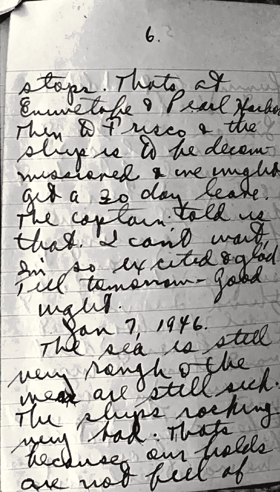
Jan. 7, 1946
The sea is still very rough & the men are still sick. The ship's rocking very bad. That's because our holds are not full of cargo. Water is coming on the decks. The life lines were put up in case a wave hits you, then you can hold on. Our water has been rationed & its pretty tough. It's only on for 3 hours a day in one hour periods. We have to use salt water for showers & to wash our clothes. The laundry isn't working because of the water shortage. The water isn't exactly low but it has
Page 08
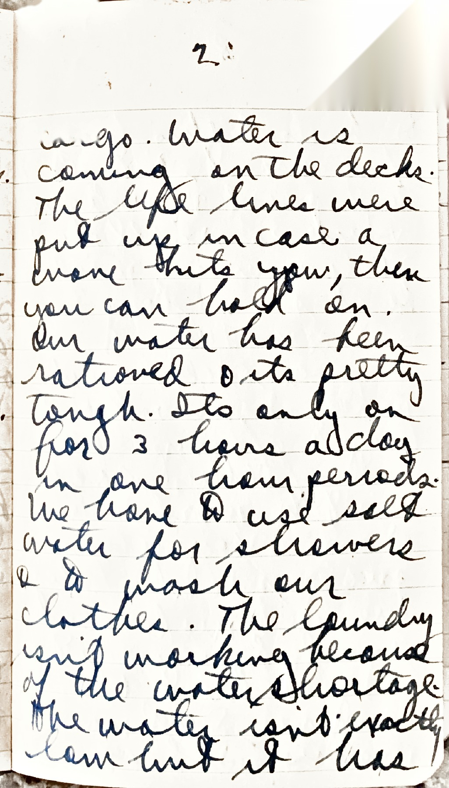
Page 09
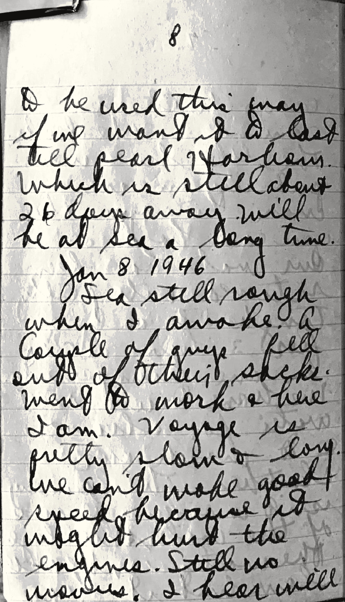
to be used this way if we want it to last till Pearl Harbor, which is still about 26 days away. We'll be at sea a long time.
Jan. 8, 1946
Sea still rough when I awoke. A couple of guys fell out of their sacks. Went to work & here I am. Voyage is pretty slow & long. We can't make good speed because it might hurt the engines. Still no movies. I hear we'll have them only on Saturday nights now because we only have 3 aboard ship. Water rationing getting worse. Salt water isn't good for laundry, found that out. I'll miss mail now.
Page 10
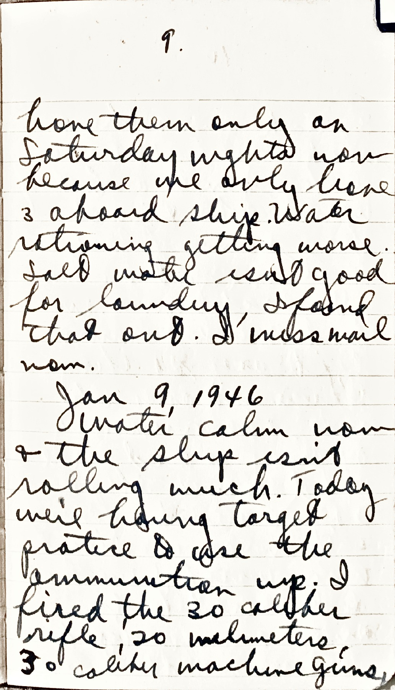
Jan. 9, 1946
Water calm now & the ship isn't rolling much. Today we're having target practice to use the ammunition up. I fired the 20 caliber rifle, 20 millimeter, 30 caliber machine guns, 3 inch gun & the 4 inch gun. The 3 & 4 make quite a bit of noise. The 4 inch has some flash too. Everyone got a chance at each gun. We had some ammo left over so they threw it over the side. The gunnery officer said we used more than $21,000 worth of ammo & threw away about $6,000 worth. We had orders not to bring any ammo back so we used it up.
Page 11
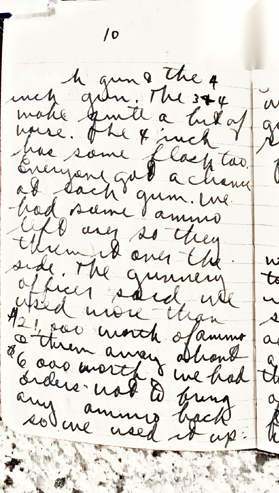
Notes & Details
Money note
Using 1946-to-2026 CPI, $21,000 is about $359,600 today; $6,000 is about $102,800.
Page 12
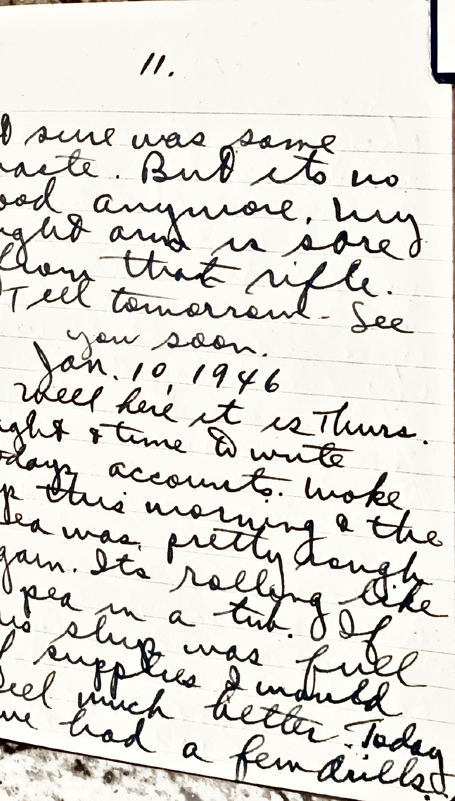
It sure was some waste. But its no good anymore. My right hand is sore from using that rifle. Till tomorrow - see you soon.
Jan. 10, 1946
Well here it is Thursday & time to write today's account. Woke up this morning & the sea was pretty rough again. Its rolling like a pea would feel in a tub. If our ship was full of supplies I wonder how much better. Today we had a few drills. They were fire drill, abandon ship drill, & collision drill. Everyone has to wear a life jacket now because its so rough. They were issued to us the first day at sea. After work I went up for some more sun. I got some tan now and I guess as soon as I hit Frisco this will show you how sunburned we're getting. So far we've only gone 553 miles, but still have 6,663 miles to our first stop
Page 13
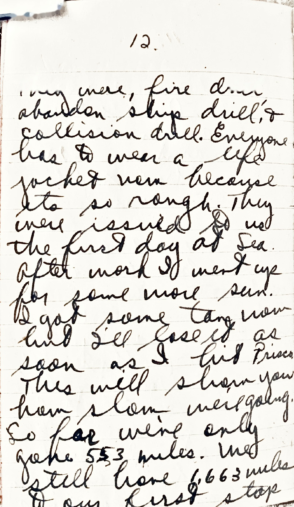
Page 14
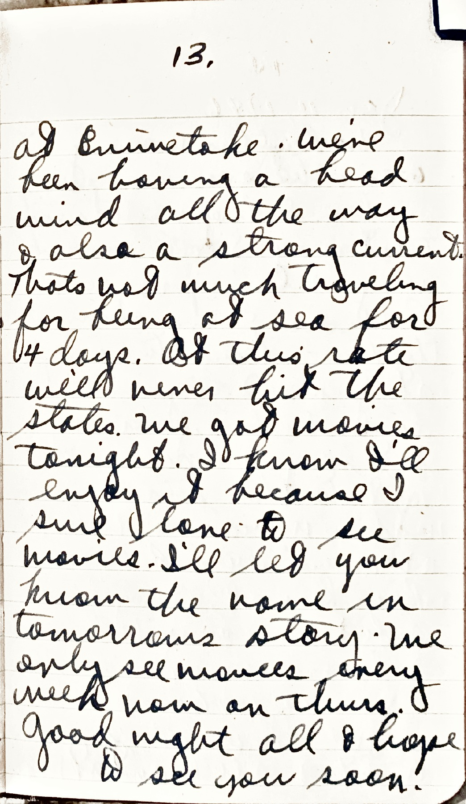
at Eniwetok. We've been having a head wind all the way & also a strong current. Thats not much traveling for being at sea for 4 days. At this rate we'll never hit the states. We got movies tonight. I know I'll enjoy it because I sure love to see movies. I'll let you know the name in tomorrow's story. We only see movies every week now on Thurs. Good night all & hope to see you soon.
Notes & Details
Eniwetok / Enewetak
Eniwetok, now often spelled Enewetak, is an atoll in the Marshall Islands used by U.S. forces as a Pacific anchorage and base area after WWII.
Page 15
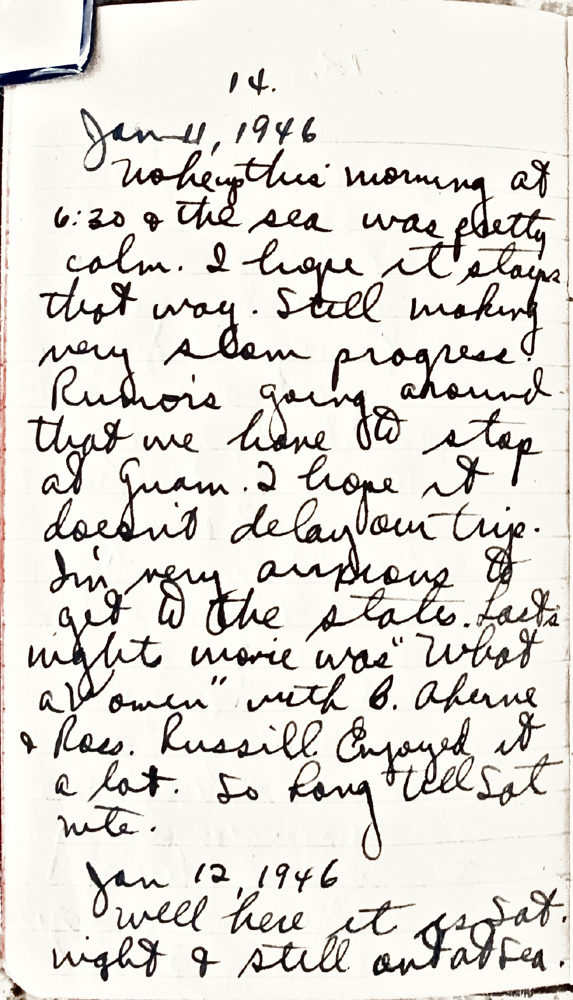
Jan. 11, 1946
Woke up this morning at 6:30 & the sea was pretty calm. I hope it stays that way. Still making very slow progress. Rumors going around that we have to stop at Guam. I hope it doesn't delay our trip. I'm very anxious to get to the states. Last night's movie was "What a Woman" with B. O'Hara & Ross Russell. Enjoyed it a lot. So long till Sat nite.
Jan. 12, 1946
Well here it is Sat night & still out at sea. The sea been the roughest today than it ever was. The Captain told us we're going to Guam for sure now. It will delay us about 4 days. At least we might get liberty there. We need food supplies. We ran out of fruits 3 days ago & vegetables 2 days ago. Food is very low. It might be rationed. The men are flooding No. 1 & 5 holds to balance the ship. It's been rolling very bad. Lately, the water comes out of the water on every roll. It's been ruining the engine. We might also get a tug at Guam cause we're going so slow.
Notes & Details
Film note
What a Woman! is a 1943 romantic comedy starring Rosalind Russell and Brian Aherne.

Page 16
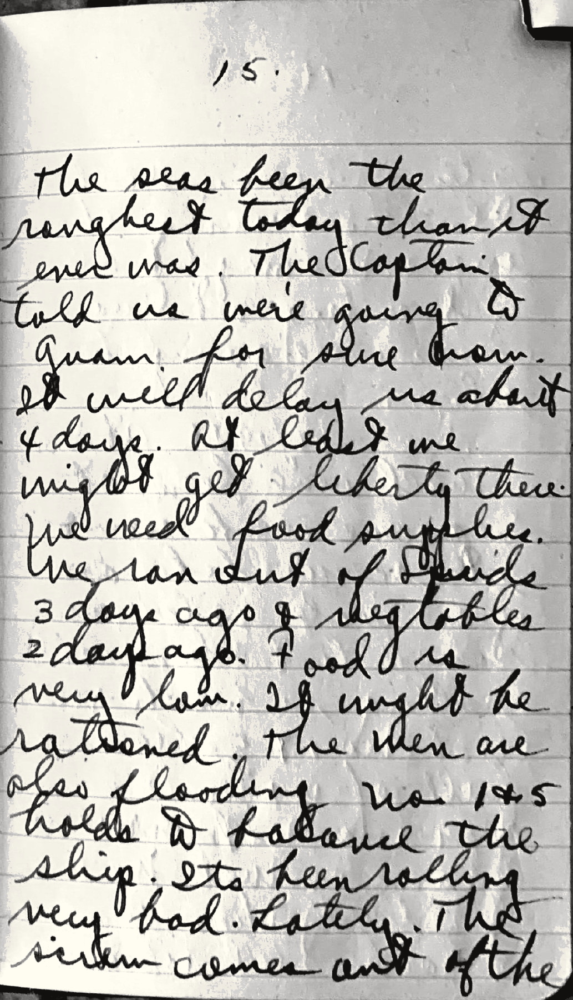
Page 17
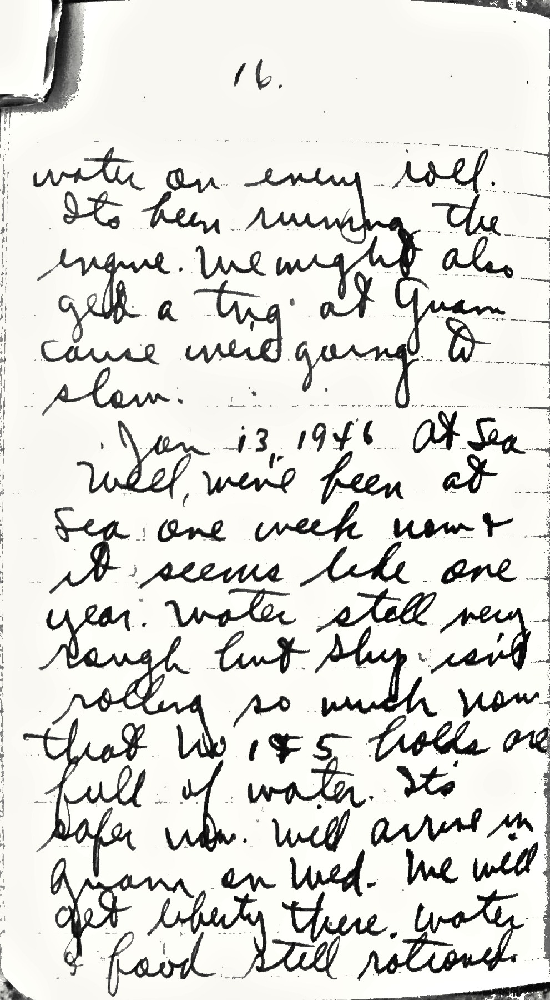
Jan. 13, 1946 - At Sea
Well, we've been at sea one week now & it seems like one year. Water still very rough but ship isn't rolling so much now that No. 1 & 5 holds are full of water. Its safer now. We'll arrive in Guam on Wed. We will get liberty there, water & food still rationed it's getting tougher now. Having movie tonight because we're going to Guam & we can get more of them. Good night.
Page 18
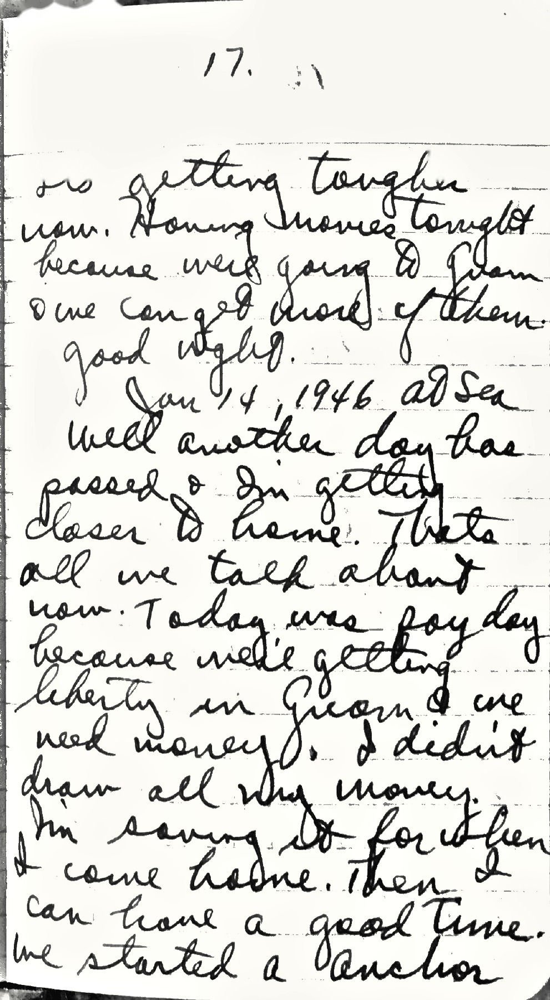
Jan. 14, 1946 - At Sea
Well another day has passed & I'm getting closer to home. Thats all we talk about now. Today was payday because we're getting liberty in Guam & we need money. I didn't draw all my money. I'm saving it for when I come home. Then I can have a good time. We started an anchor pool today. We get 60 men to put up a dollar each. Then we got 60 sealed envelopes with numbers in them from one to 60. Every man puts his name on one of them. When we hit Guam & the anchor drops its recorded to the minute on the bridge. So if its 4:35 the man with the number 35 wins $60.00. We're starting one for Frisco soon for $5.00 per man. Thats a $300.00 prize. We will arrive in Guam tomorrow I think. Then we'll find out who has won.
Page 19
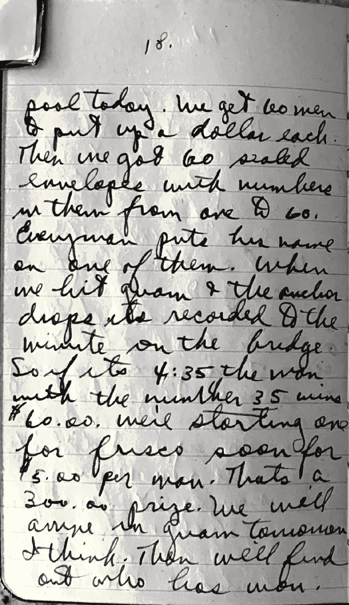
Notes & Details
Anchor pool money note
Approximate 2026 CPI equivalents for the 1946 anchor pool amounts: $1 is about $17; $5 is about $86; $60 is about $1,031; and the $300 Frisco prize is about $5,157.
Page 20
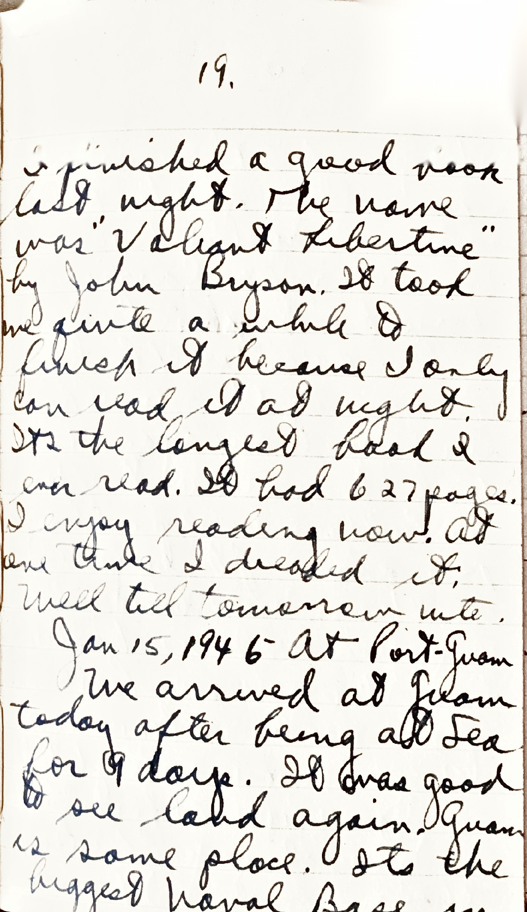
I finished a good book last night. The name was "Valiant Libertine" by John Bryson. It took me quite a while to finish it because I only can read it at night. It's the longest book I ever read. It had 627 pages. I enjoy reading now. At one time I disliked it. Will tell tomorrow nite.
Jan. 15, 1946 - At Port, Guam
We arrived at Guam today after being at sea for 9 days. It was good to see land again. Guam is some place. It's the biggest naval base in the Pacific. There are over 100 ships in the harbor. We were anchored near the aircraft carriers "Hornet" & "Saratoga." Besides a few CVE's. We'll be here till Sunday then we'll begin our trip home again. We took the water out of No. 1 & 5 holds & were putting 150 aircraft engines in them. We're also getting supplies, water isn't rationed in port & now we have fresh water showers. Till tomorrow night!
Notes & Details
Book and route note
Valiant Libertine was a 1942 novel by John Bryson. The map below shows the approximate geography of the route, not the ship's exact track.
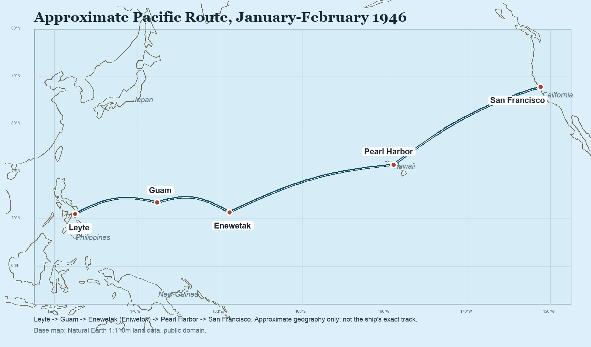
Page 21
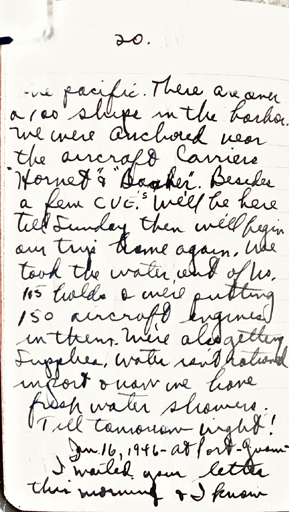
Page 22
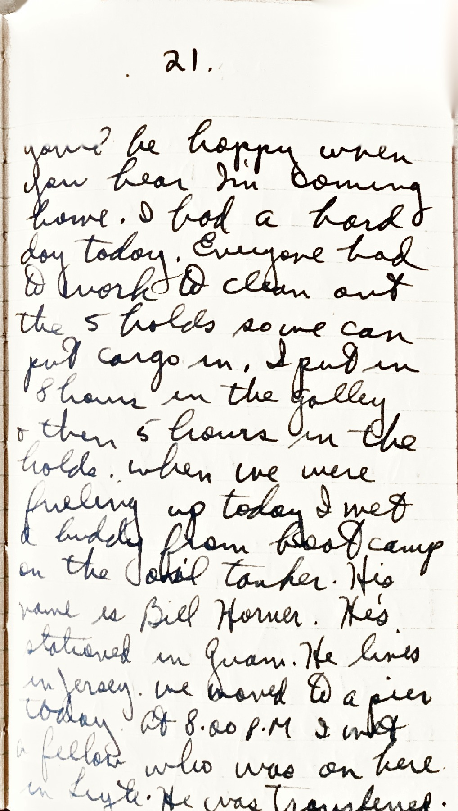
Jan. 16, 1946 - At Port, Guam
I mailed your letter this morning & I know you'll be happy when you hear I'm coming home. I had a hard day today. Everyone had to work to clean out the 5 holds so we can put cargo in. I put in 8 hours in the galley & then 5 hours in the holds. When we were fueling up today I met a buddy from boot camp on the oiler tanker. His name is Bill Horner. He's stationed in Guam. He lives in Jersey. We moved to a pier today at 8:20 P.M. I met a fellow who was on here in Leyte. He was transferred. He's stationed here also. He has a jeep & I was driving it all night. It's now 11:30 so I was driving for about 3 hours. Those jeeps sure can go. Still loading tomorrow again. I hope we shove off Sunday. Good night. x
Page 23
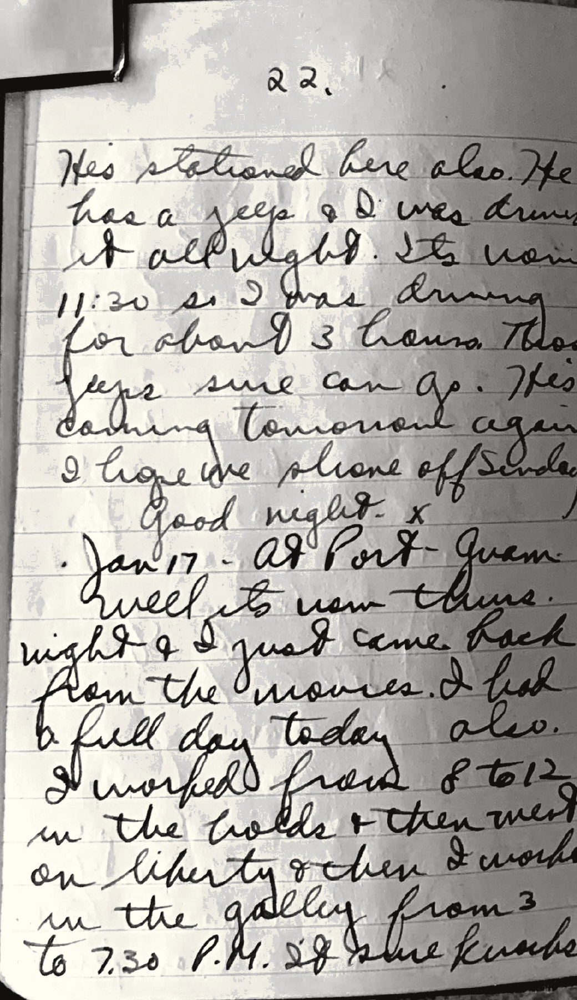
Jan. 17 - At Port, Guam
Well its now Thurs. night & I just came back from the movies. I had a full day today also. I worked from 8 to 12 in the holds & then went on liberty & then I worked in the galley from 3 to 7:30 P.M. It sure knocks a guy out. It sure is swell ashore on Guam. Swimming, cokes & beer, all you want. I swam all afternoon. Just like you see in the movies. A nice white beach - only no girls! Still loading up. Thats all for now.
Page 24
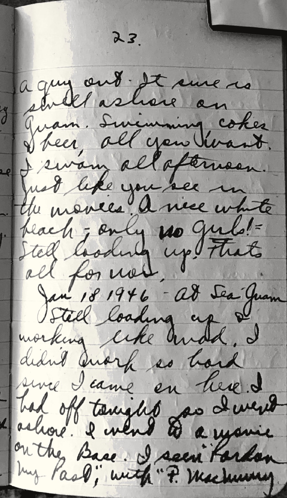
Jan. 18, 1946 - At Sea, Guam
Still loading up & working like heck. I didn't work so hard since I came on here. I had off tonight so I went ashore. I went to a movie on the Base. I seen "Pardon My Past," with F. MacMurray thats the fine picture I seen that I enjoyed. No breaks, no rain, no noise & no separated reels. It was shown at "Nab Hill Bowl" outdoor theatre. I also seen a U.S.O. show with 5 beautiful American girls. They sure looked swell. Rumors we're leaving tomorrow instead of Sunday. So long.
Notes & Details
Film note
Pardon My Past is a 1945 comedy starring Fred MacMurray.

Page 25
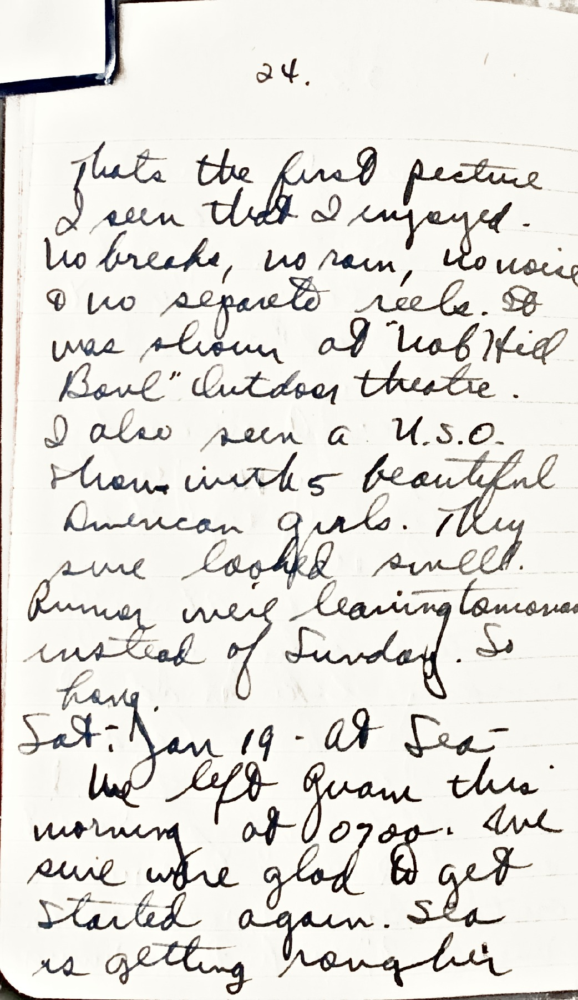
Sat. Jan. 19 - At Sea
We left Guam this morning at 0700. We sure were glad to get started again. Sea is getting rougher tonight. Cargo not helping much. Still rolling.
Page 26
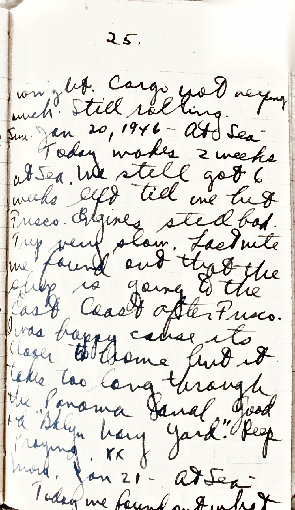
Sun. Jan. 20, 1946 - At Sea
Today makes 2 weeks at sea. We still got 6 weeks left till we hit Frisco. Engine still bad. Trip very slow. Last nite we found out that the ship is going to the East Coast after Frisco. I was happy cause its closer to home but it takes too long through the Panama Canal. Good old "B'klyn Navy Yard." Keep praying. xx
Mon. Jan. 21 - At Sea
Today we found out what our cargo is. We got carbines, .45's, shoes, parachutes, & Arctic coats. We're all trying to get one of each. I heard that song "Long Long Time" 3 times & I like it better every time.
Page 27
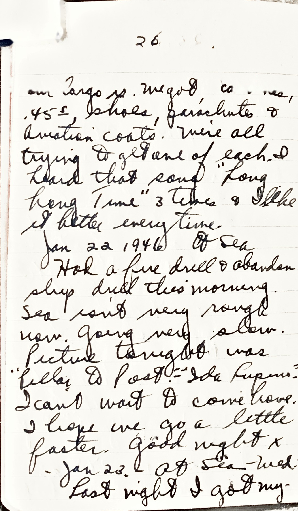
Jan. 22, 1946 - At Sea
Had a fire drill & abandon ship drill this morning. Sea isn't very rough now. Going very slow. Picture tonight was "Pillow to Post" - Ida Lupino. I can't wait to come home. I hope we go a little faster. Good night x
Jan. 23 - At Sea, Wed.
Last night I got my- self a aviation jacket, combat shoes & work shoes (2 pair). No carbines yet. I wonder if I can get all this stuff off before we hit Eniwetok Saturday. Then P.H., Frisco, & N.Y. O'Boy!
Notes & Details
Song and film notes
It's Been a Long, Long Time was a 1945 homecoming-era hit. Pillow to Post is a 1945 film starring Ida Lupino.

Page 28
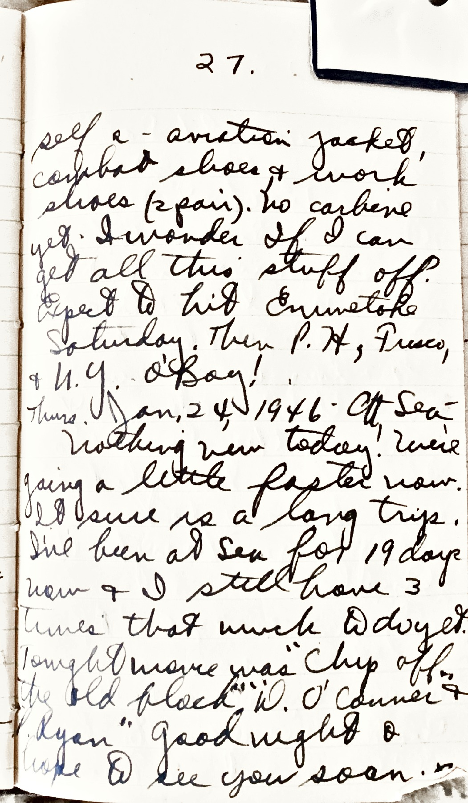
Thurs. Jan. 24, 1946 - At Sea
Nothing new today. We're going a little faster now. It sure is a long trip. I've been at sea for 19 days now & I still have 3 times that much to do yet. Tonight movie was "Chip off the Old Block" W. O'Connor & Ryan. Good night & hope to see you soon.
Notes & Details
Film note
Chip Off the Old Block is a 1944 musical comedy starring Donald O'Connor and Peggy Ryan.

Page 29
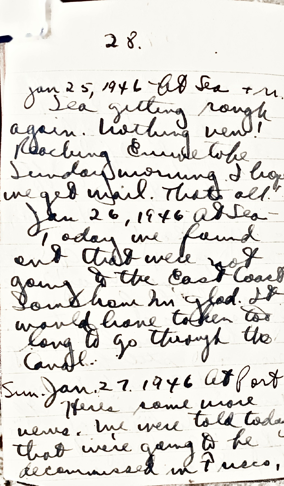
Jan. 25, 1946 - At Sea, Fri.
Sea getting rough again. Nothing new! Reaching Eniwetok Sunday morning I hope we get mail. Thats all.
Jan. 26, 1946 - At Sea
Today we found out that we're not going to the East Coast. Somehow I'm glad. It would have taken too long to go through the Canal.
Sun. Jan. 27, 1946 - At Port
There's some more news. We were told today that we're going to be decommissioned in Frisco, on April 15th. And everyone has a good chance of getting discharged. I'll keep this a secret for now from your letters. Refueled. Promotions today to S.C. 3/c. I always wanted to be a petty officer. Arrived at Eniwetok this morning. Received 36 letters.
Page 30
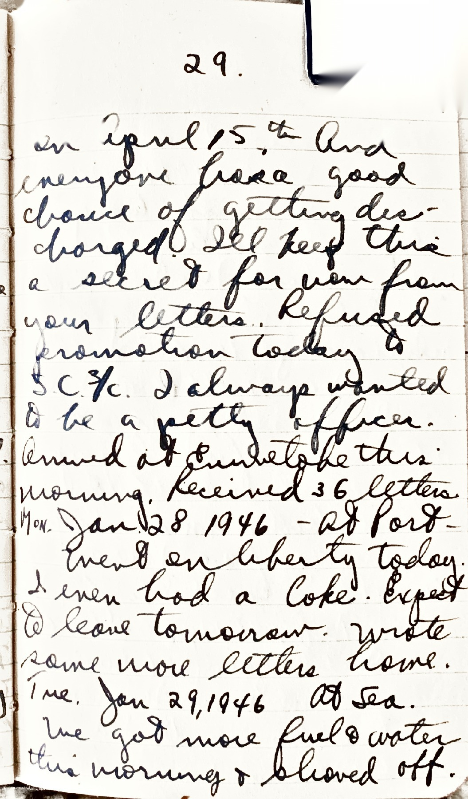
Mon. Jan. 28, 1946 - At Port
Went on liberty today. I even had a Coke. Expect to leave tomorrow. Wrote some more letters home.
Tue. Jan. 29, 1946 - At Sea
We got more fuel & water this morning & shoved off. Water rationed again.
Page 31
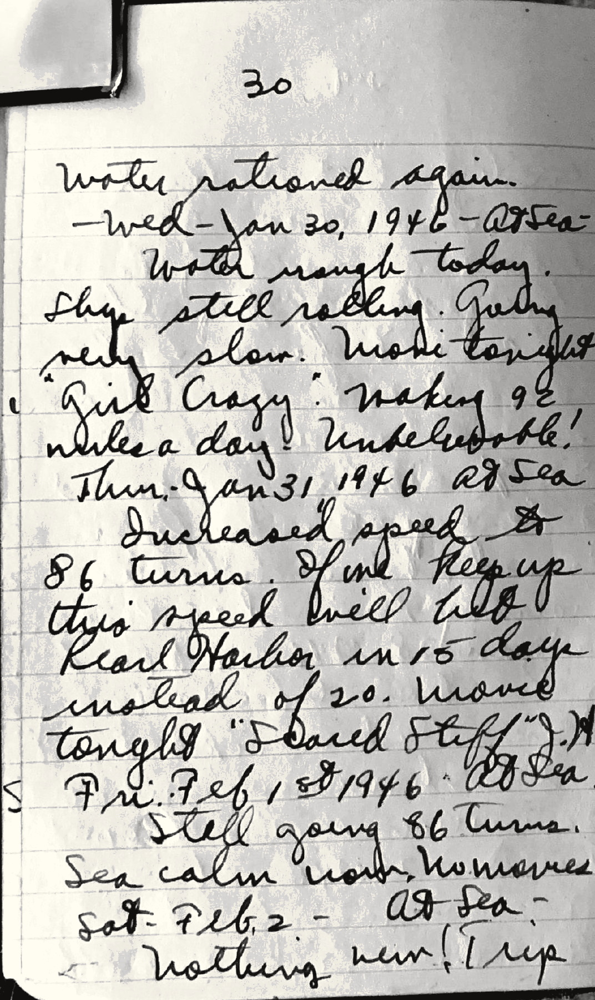
Wed. Jan. 30, 1946 - At Sea
Water rough today. Ship still rolling. Going very slow. Movie tonight "Girl Crazy." Making 92 miles a day! Unbelievable!
Thur. Jan. 31, 1946 - At Sea
Increased speed to 86 turns. If we keep up this speed we'll hit Pearl Harbor in 15 days instead of 20. Movie tonight "Sacred Stiff." J.M.
Fri. Feb. 1st, 1946 - At Sea
Still going 86 turns. Sea calm now. No movies.
Sat. Feb. 2 - At Sea
Nothing new! Trip is very boring. Wish I was home.
Notes & Details
Speed note
92 miles per day is roughly 3.8 miles per hour; 86 turns likely refers to engine or shaft RPM, not miles per hour. Girl Crazy and Scared Stiff (written in the diary as "Sacred Stiff") were period films.


Page 32
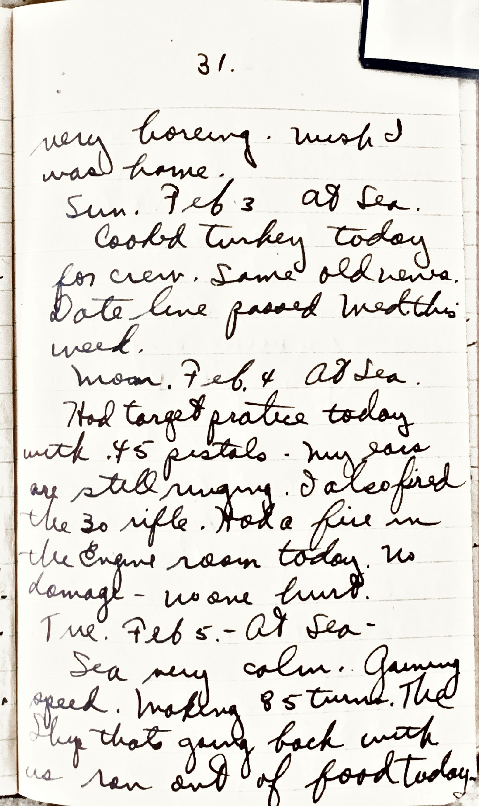
Sun. Feb. 3 - At Sea
Cooked turkey today for crew. Same old news. Date line passed Wed. this week.
Mon. Feb. 4 - At Sea
Had target practice today with .45 pistols. My ears are still ringing. I also fired the 30 rifle. Had a fire in the engine room today. No damage - no one hurt.
Tue. Feb. 5 - At Sea
Sea very calm. Gunnery week. Making 85 turns. Ship that's going back with us ran out of food today. So they pulled alongside us & we shot a line over & sent them food. It took us about 2 hours. We're very short now on food also. Water rationing cut to 3 - 15 minute periods. Its only on for 45 minutes a day. It sure is getting tough. So long x
Page 33
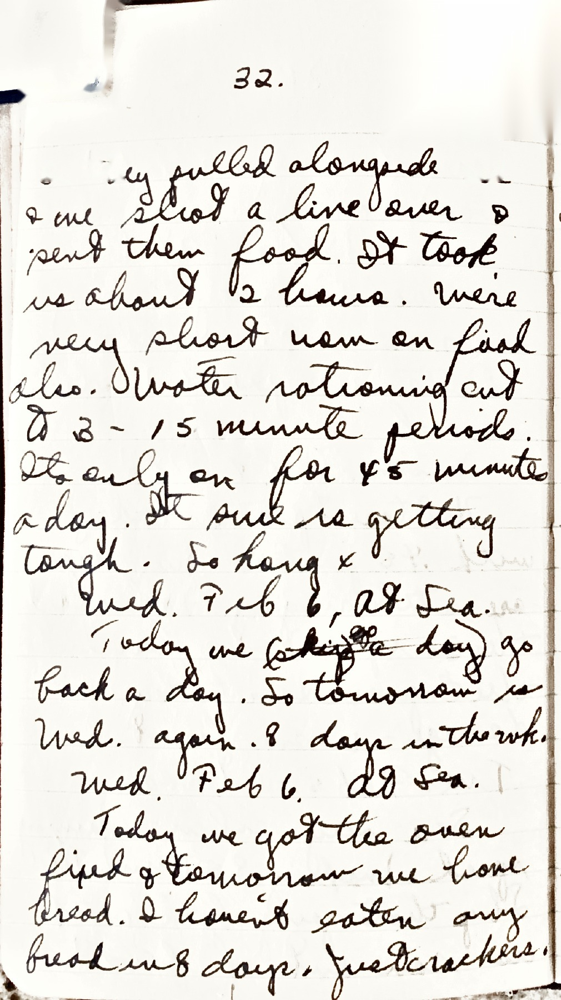
Wed. Feb. 6 - At Sea
Today we lose a day & go back a day. So tomorrow is Wed. again. 8 days in the week.
Wed. Feb. 6 - At Sea
Today we got the oven fixed & tomorrow we have bread. I haven't eaten any bread in 8 days. Just crackers. Sea very calm. Just like glass. Today we seen 6 whales. Boy are they big.
Page 34
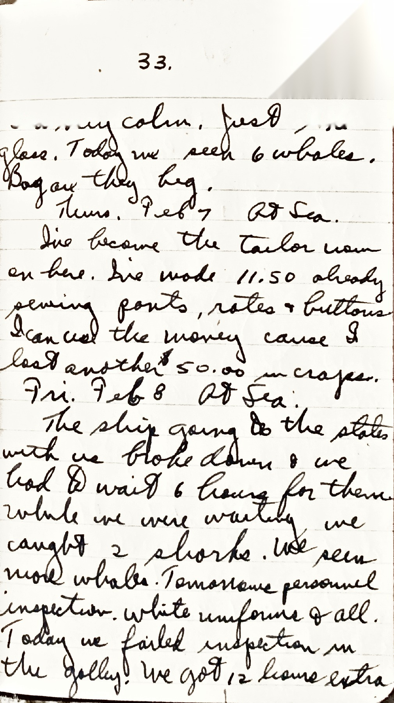
Thurs. Feb. 7 - At Sea
I've became the tailor man on here. I've made $11.50 already sewing pants, rates & buttons. I can use the money cause I lost another $50.00 in craps.
Fri. Feb. 8 - At Sea
The ship going to the states with us broke down & we had to wait 6 hours for them. While we were waiting, we caught 2 sharks. We seen 100s whales. Tomorrow personnel inspection. White uniforms & all. Today we failed inspection in the galley. We got 12 hours extra duty cause of that. And we spent 6 hours last night cleaning up too. They haven't any heart. For the past 2 days we've all been freezing. And guess what the temperature was, only 79 degrees? Imagine freezing in that warm weather. But after spending 7 months in the Phil. with a temperature of 100 to 120 anything lower than that & we freeze. The doc's been giving us some pills so we won't catch cold. I don't know how we'll take it when we're in the states & its about 40 degrees. I use a blanket now.
Notes & Details
Whales and money
Pacific whale sightings could include large species such as sperm, humpback, or blue whales. Poppie's February 1946 sightings came while Pegasus was at sea between Enewetak and Pearl Harbor; these NOAA sanctuary photos show representative humpback whales in Hawaiian waters. $11.50 in 1946 is about $197 today; $50 is about $856.
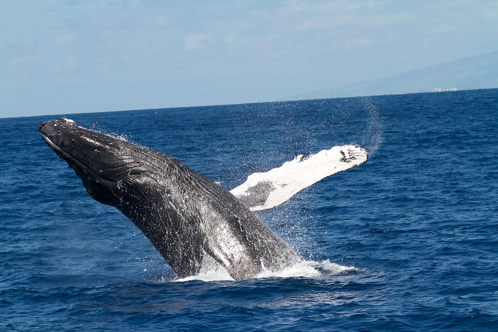
Page 35
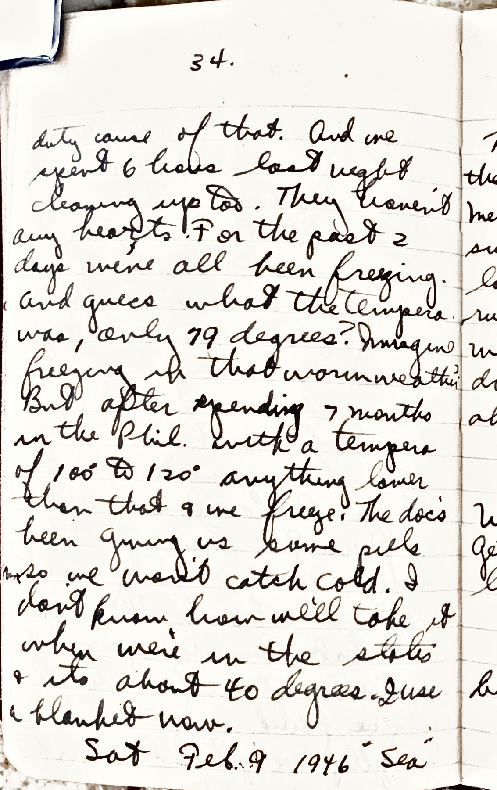
Sat. Feb. 9, 1946 - Sea Today personnel inspection was strictest I've ever attended. Men were given extra duty for such things as no buttons, shoes untied, not neatly pressed clothes, spots, etc. I was alright. We also took pictures of the crew dressed up. About to arrive in P.H. Mon Tue. morning.
Page 36
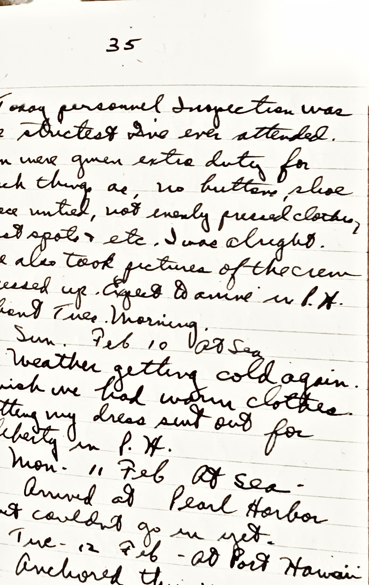
Sun. Feb. 10 - At Sea
Weather getting cold again. Wish we had warm clothes. Getting my dress suit out for liberty in P.H.
Mon. 11 Feb - At Sea
Arrived at Pearl Harbor but can't go in yet. Anchored there.
Tue. 12 Feb - At Port Hawaii Lost anchor pool which was for $250.00. Got liberty today & the place is swell. Just like Frisco. Buses, shoeshine boys, taxis, everything. I sent a radiogram home to mom. I went to the Waikiki Beach & Royal Hawaiian Hotel & the Moana Hotel. All together I spent $46.00. I have to borrow some more so I can go today.
Page 37
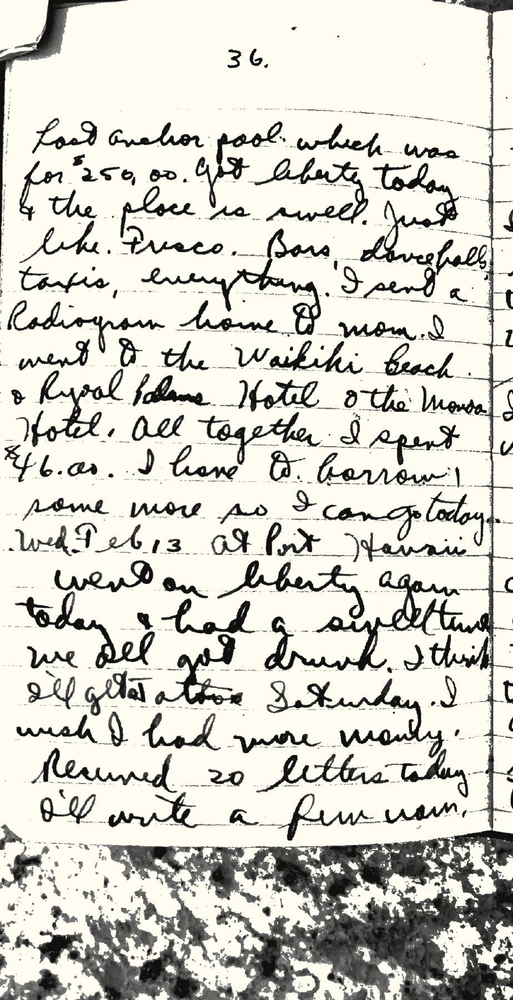
Wed. Feb. 13 - At Port Hawaii
Went on liberty again today & had a swell time. We all got drunk. I think I'll get a tattoo Saturday. I wish I had more money. Received 20 letters today. I'll write a few now.
Notes & Details
Royal Hawaiian
The Royal Hawaiian opened in 1927 and was known as the Pink Palace of the Pacific; during WWII it served military R&R use.


Page 38
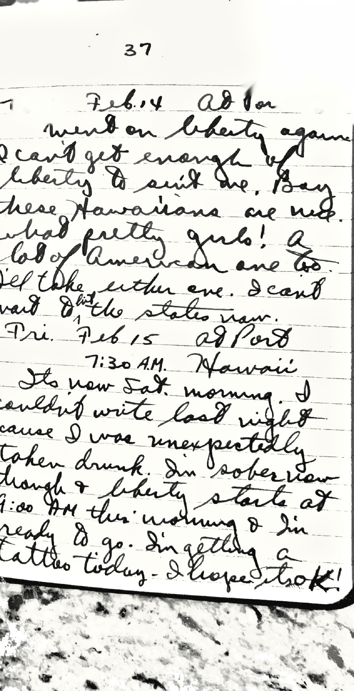
Thurs. Feb. 14 - At Port Hawaii
Went on liberty again. I can't get enough of liberty to suit me. Boy these Hawaiians are nice. And pretty girls! A lot of Americans are too. I'll take either one. I can't wait to hit the states now.
Fri. Feb. 15 - At Port Hawaii
7:30 A.M.
It's now Sat. morning. I couldn't write last night cause I was unexpectedly taken drunk. I'm sober now though & liberty starts at 9:00 A.M. this morning & I'm ready to go. I'm getting a tattoo today. I hope it takes.
Page 39
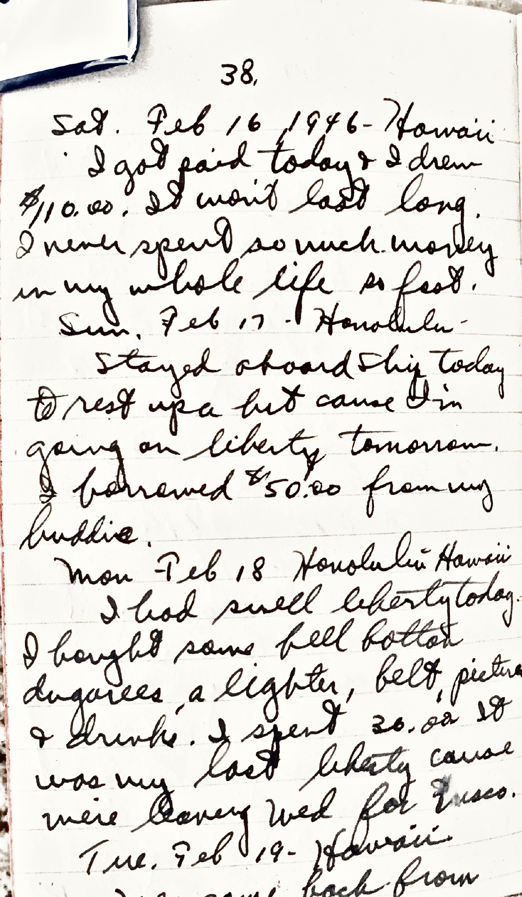
Sat. Feb. 16, 1946 - Hawaii
I got paid today & I drew $110.00. It won't last long. I never spend so much money in my whole life so fast.
Sun. Feb. 17 - Honolulu
Stayed aboard ship today to rest up a bit cause I'm going on liberty tomorrow. I borrowed $50.00 from my buddy.
Mon. Feb. 18 - Honolulu, Hawaii
I had swell liberty today. I bought some bell bottom dungarees, a lighter, belt, pictures & drinks. I spent $20.00. It was my last liberty cause we're leaving Wed. for Frisco.
Tue. Feb. 19 - Hawaii
Page 40
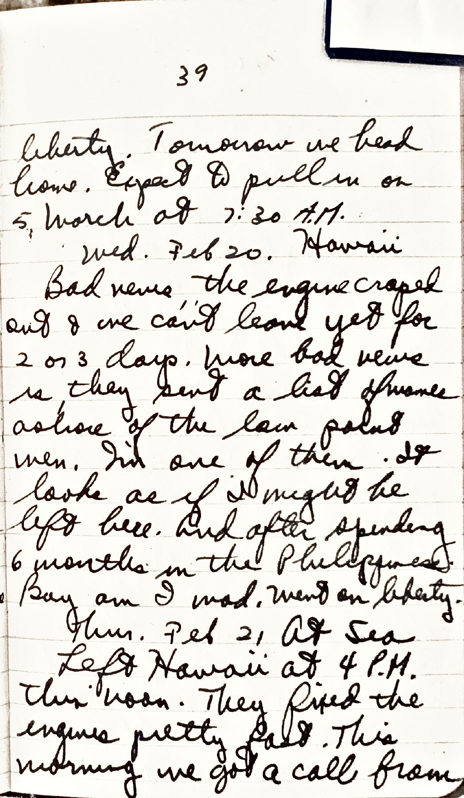
liberty. Tomorrow we head home. Expect to pull in on 5 March at 7:20 A.M.
Wed. Feb. 20 - Hawaii
Bad news the engine craped out & we can't leave yet for 2 or 3 days. More bad news is they sent a last minute list of names ashore of the low point men. I'm one of them. It looks as if I might be left here. And after spending 6 months in the Philippines. Boy am I mad.
Thur. Feb. 21 - At Sea
Left Hawaii at 4 P.M. this noon. They fixed the engine pretty fast. This morning we got a call from the beach to leave 13 low point men here. It sure was a rotten trick to play on the men. The captain said he was glad & boy we felt like killing him, the rat! I was lucky, I wasn't called cause I've been on here longer than most of the S 1/c & I have 8 more points than them.
Page 41
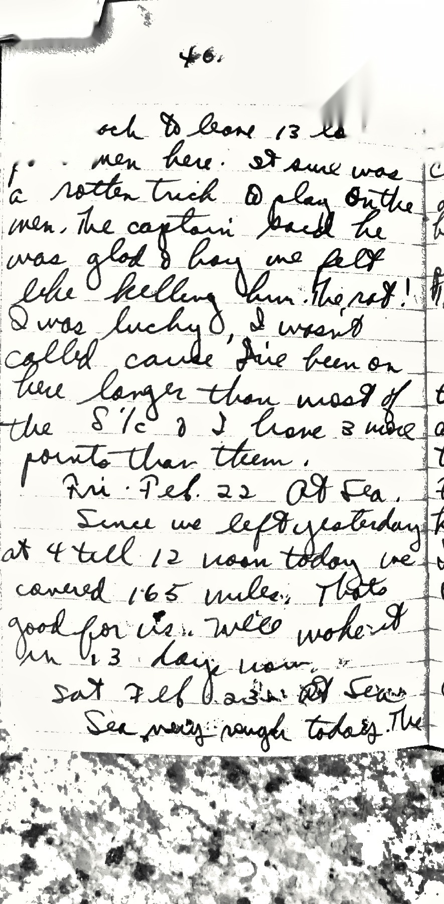
Fri. Feb. 22 - At Sea
Since we left yesterday at 4 till 12 noon today we covered 165 miles. Thats good for us. We'll make it in 43 days now. x
Sat. Feb. 23rd - At Sea
Sea very rough today. The ship is rolling pretty bad, can't walk straight. It's also very cold out. It wouldn't be to you. But, to us it is. The picture tonight was "Duffy's Tavern." It was very good.
Page 42
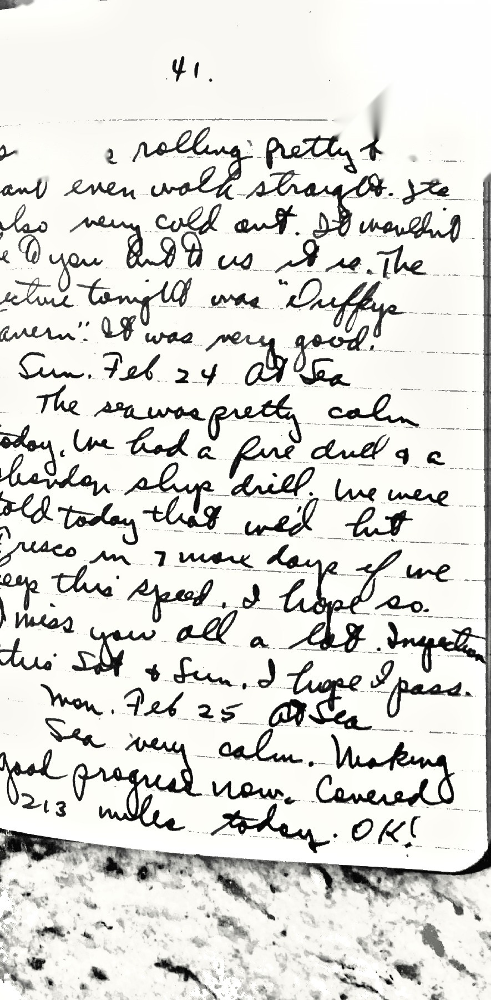
Sun. Feb. 24 - At Sea
The sea was pretty calm today. We had a fire drill & a abandon ship drill. We were told today that we'll hit Frisco in 7 more days if we keep this speed. I hope so. I miss you all a lot. Inspection this afternoon & sun. I hope I pass.
Mon. Feb. 25 - At Sea
Sea very calm. Making good progress now. Covered 213 miles today. O.K.!
Notes & Details


{kind=link}
{kind=link}
.jpg){kind=link}
.jpg){kind=link}
.jpg){kind=link}
-L1004750.jpg){kind=link}
{kind=link}
{kind=link}
Page 43
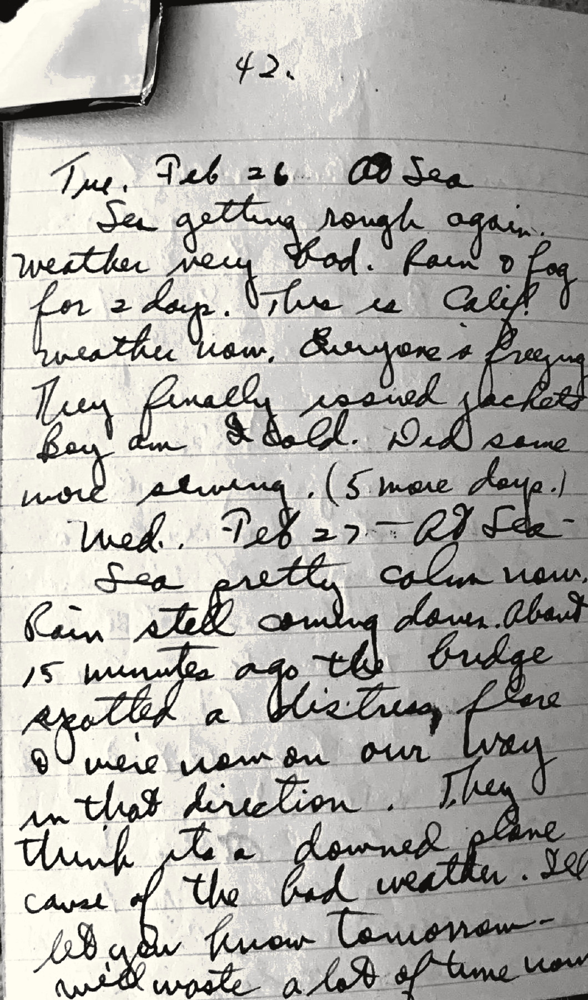
Tue. Feb. 26 - At Sea
Sea getting rough again. Weather very cool. Rain & fog for 2 days. This is Calif. weather now. Everyone's freezing. They finally issued jackets. Boy am I glad. Did some more sewing. (5 more days.)
Wed. Feb. 27 - At Sea
Sea pretty calm now. Rain still coming down. About 15 minutes ago the bridge spotted a floating fire & we're now on our way in that direction. They think its a downed plane cause of the bad weather. I'll let you know tomorrow - will waste a lot of time now.
Page 44
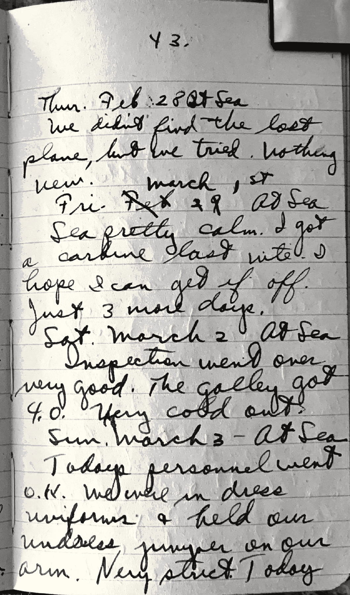
Thur. Feb. 28 - At Sea
We didn't find the lost plane, but we tried. Nothing new.
Fri. March 1st - At Sea
Sea pretty calm. I got a carbine last nite. I hope I can get it off. Just 3 more days.
Sat. March 2 - At Sea
Inspection went over very good. The Galley got 4.0. Very cold out.
Sun. March 3 - At Sea
Today personnel went O.K. We were in dress uniforms & held our undress jumper on our arm. Very strict today. The sea was the roughest its ever been. Every time I go on deck I get a bath. Its coming over the bow & even the gunnels. The weather seems like its below zero. When it gets rough at sea it really stays rough. I hope it calms down. We were told to expect rough weather near Frisco. We will pull in tomorrow morning. Today is our 58th day at sea from the Philippines & tomorrow is our last. I'll call you as soon as I get ashore. I'll also send a wire. I hope
Page 45
Page 46
I get my leave soon as I'm very anxious to get home. I was told I'd make 3rd class petty officer before I got off. Well tomorrow is my last day at sea on this ship. It's being decommissioned & I'll get a new ship now. I hope I get discharged. No more water rationing. We were told we can wear a star on our Philippine Liberation for the work we did near Luzon & for the air raids on our fleet. We're finally near the U. States.
Page 47
Mon. March 4 - At Port San Francisco, United States
After 59 days from the Philippines we arrived in Frisco at 0830 this morning. We went under the Golden Gate Bridge & it sure looked good. I went on liberty today & had a swell time. I sent a telegram to you. I spent $20.00. That sure is little. Altogether I spent $37.00 on liberty. Thats about 6 days combined. The states sure look good. But I still wish I was home. Twenty five men got discharged today. The ship sure seems deserted.
Notes & Details
59-day route check
The route shown totals about 6,650 nautical miles. Poppie's 59-day count lines up with Jan. 4, 1946, the diary's first homeward-order entry, through the Mar. 4 arrival in San Francisco. From the Jan. 6 departure from Leyte to Mar. 4 is about 57 elapsed days. Spread across 59 days, the mapped distance averages about 113 nautical miles per day, which fits his notes about slow speed, engine trouble, Guam and Pearl Harbor delays, and port days.
Page 48
Tue. March 5 - U. States
We don't know when we're going to be decommissioned so I still don't know when my leave is due. I hope its soon.
Wed. March 6 - U. States
Went on liberty today again. I hope I get my money order soon. I got a date for Sat. nite with Dolores, my buddy who lives here fixed it up for me. I sure will feel funny. We went dancing today & I had to learn all over. But I got used to it again. I sure like to dance.
Notes & Details
Route details
The route distances are approximate great-circle distances between locations, not Pegasus's exact track. Total shown route: about 6,650 nautical miles.
Golden Gate Bridge
Poppie wrote that Pegasus went under the Golden Gate Bridge at 0830 on Mar. 4, 1946. This modern color photograph shows the bridge from the Marin Headlands, the same landmark that marked his arrival back in the United States.

{kind=link}
Page 49
Thurs. 7 March - U. St.
I received an answer to my telegram & I have to pick the money up at San Francisco. We moved today to Oakland. We left Frisco cause the piers were all taken. No mail yet! Going on liberty soon. Its now 7 P.M.
Fri. 8 March - U.S.
I picked up my money order for $50.00. It came in handy. I had a date today & it was swell. My buddy lives here & he got an extra girl. Thats the first girl I kissed in 10 months.
Notes & Details
Liberty and dancing
Poppie writes that he had to learn to dance all over again, then quickly adds that he still loved it. This official U.S. Navy photograph from June 1945 shows a similar wartime liberty scene: sailors in uniform dancing with friends while a Navy band plays.

Page 50
Sat. 9 March - San Frisco
Just wrote 4 letters home & one to Marie. The weather's very cold. Its foggy all the time. Rumor going around that all leaves are cancelled. I'll kill somebody if they are.
Sun. 10 March - Oakland
Weather still foggy & cold. Nothing to do. No liberty today.
Mon. 11 March - Out in Harbor Tue. 12 March - Still waiting
Page 51
Wed. 13 March - Still waiting
Thur. 14 March - Same
Fri. 15 March - Pay day
Sat. 16 March - Nothing
Sun. 17 March - Liberty with Olive
Mon. 18 March - Liberty with Olive
Tue. 19 March - Liberty with Olive
Wed. 20 March - Liberty with Olive
Thur. 21 March - Liberty with Olive
Fri. 22 March - Liberty with Olive
Sat. 23 March - Liberty with Olive
Sun. 24 March - Liberty with Olive. Received ring from her. Had a swell time.
Mon. 25 March - Worked
Tue. 26 March - Liberty with Olive
Wed. 27 March - Seen Olive at home
Thur. 28 March - Liberty with Olive